Project 5: Focusing
By Ankit Mathur
What I learned about light fields from this project is that it is a much richer abstraction to represent a visual space. Rather than being limited to measuring intensity on multiple channels like a normal camera, by attempting to capture the lightfield with a Lytro-style camera, one can obtain very interesting effects like the ones that we are about to discuss.
Depth Refocusing
In part 1 of this project, we worked on using a field of images that were taken in a 17x17 grid and using them to be able to refocus a given image to a different part of the image. For example, we may want to focus the image onto the front of the image. We take advantage of the fact that we have a significant amount of data about the scene because of the many photos that we have which are taken at different angles.
By shifting the images to align at the center and using a constant, A, to control how much we're shifting the other images. We compute dx and dy relative to the center of the center image for every other image simply by subtracting the center point from the grid position of an image within the grid of images that are taken as input to the algorithm.
- 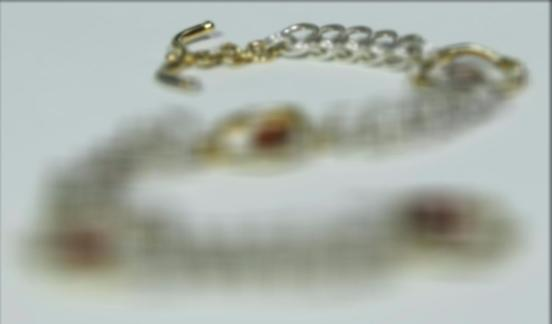
- 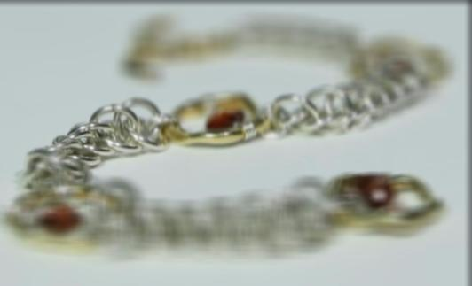
- 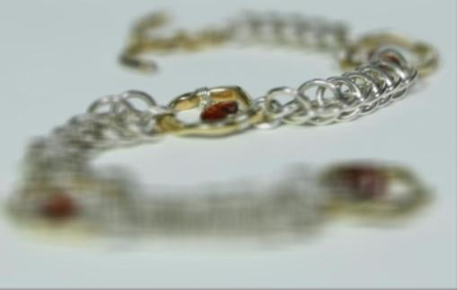
- 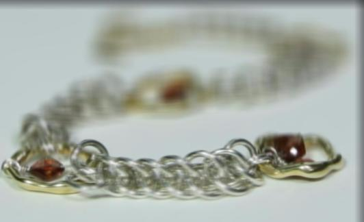
Best Result for Depth Refocusing:
Original Image:
Aperture Adjustment
In part 2, we want to simulate adjusting the aperture of the image that we are refocusing. We do this by limiting the region of images that we translate and compute an average over. If we used just a single image, then we would be simulating the tiniest possible aperture. Allowing more images from different angles to contribute to the average simulates allowing light from a wider range of angles into the image, simulating a larger aperture.
Thus, we simply use our depth refocusing function, but we pass in a cropped image grid.
Here, we use the pirate treasure example to observe how we can change the aperture. The image with all the details is the one with the smallest aperture and the one with the largest is the focused one.
The images below are with radius 0, 2 and 5.
The GIF loops back and shows the transition in both directions:
- 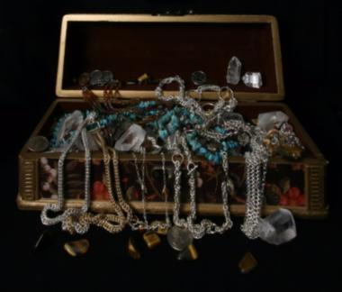
- 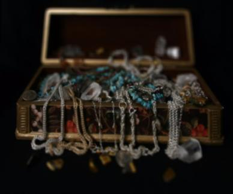
- 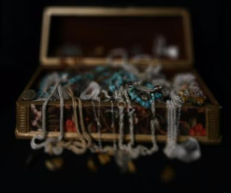
Bells and Whistles: My Own Images
- 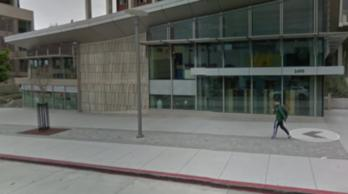
- 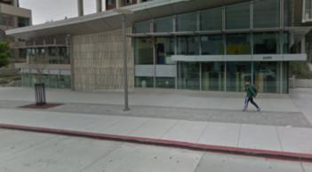
- 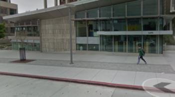
- 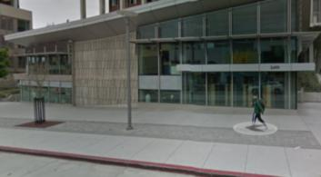
- 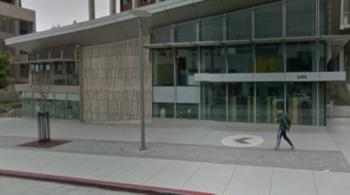
- 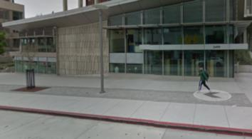
- 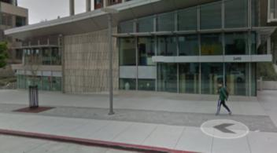
- 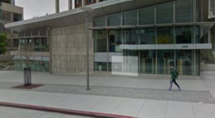
- 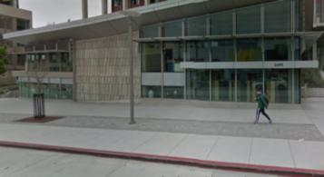
I obtained this 3x3 grid of images from Google Maps and tried to use it to create an autofocus environment. To do this, I had to screenshot a scene, then shift the Street View viewer, then take another screenshot, etc. I generated vertical shifts by changing the axis of viewing that I had in the Street View viewer.
Unfortunately, this did not work, resulting in the following image for most of the potential alpha values:
I think that this did not work because the vertical axis shift was too significant - I was doing this by hand, and, you can clearly see the person being replicated vertically across many of the images. This prevents any alignment from occurring.
Furthermore, and potentially more significantly, the image is such that there is no one thing that is in the foreground. Because this is a Google Street View image, all of the material is in the background, which is naturally going to be farther away and more likely to vary across images.
It is definitely not easy to get a good set of images without a specialized camera or set up for this purpose.